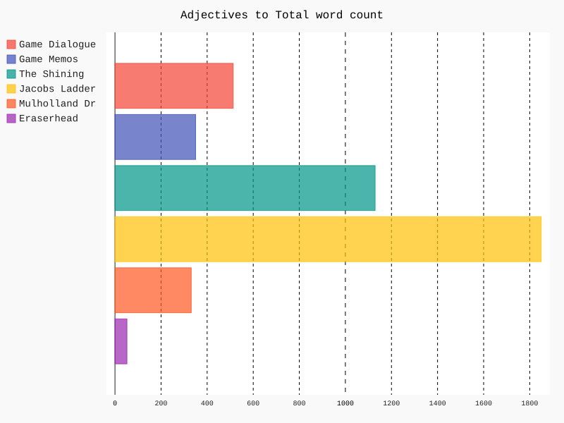
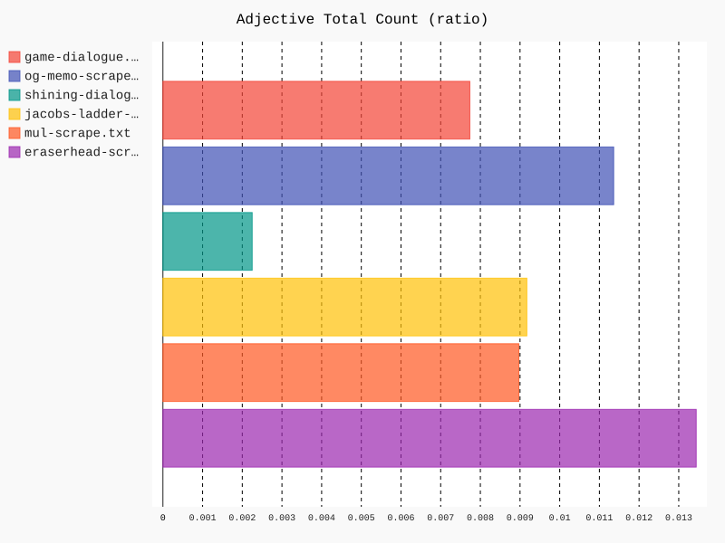

Research and Results:
By Ella G. and Jack N.
Project Description:
This is a website dedicated to exploring how other forms of media and art have influenced the style, design, story, and general themes of Silent Hill 2 through an in-depth analysis and comparison of the text in Silent Hill 2
Points of Interest
Silent Hill 2 draws from a wide array of sources for inspiration. From renowned filmmakers like David Lynch, David Cronenberg, and Adrian Lyne to literary giants such as Adrian Lyne and Stephen King, there is a wealth of meaning buried in this game, just waiting.
Research
Films that Inspired Silent Hill 2


Put link here for interactive network
Network overview:

Adjectives

